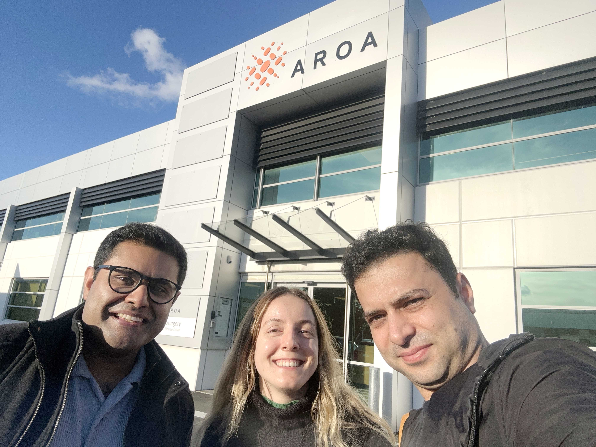
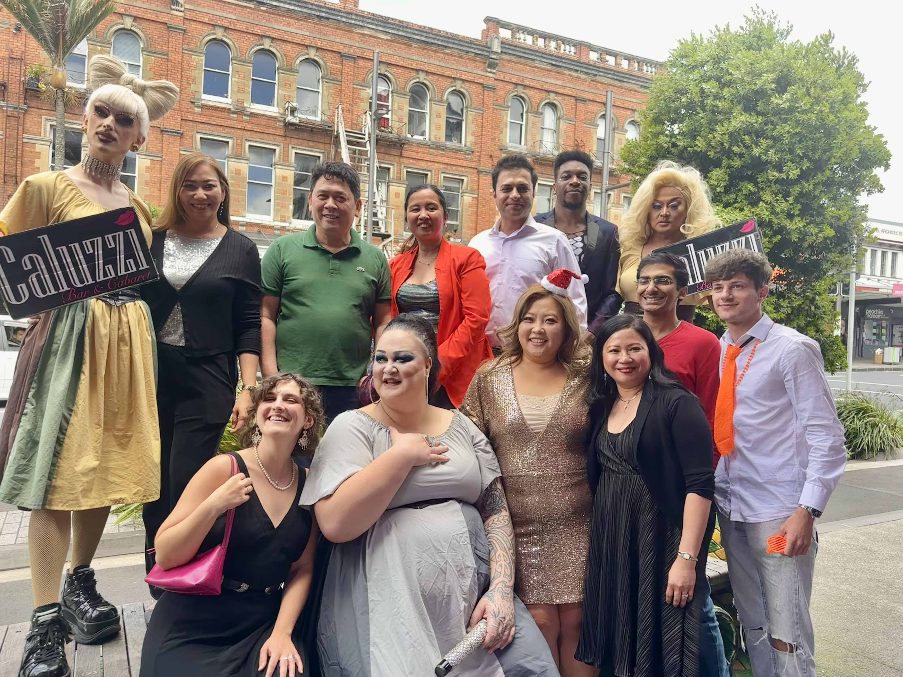
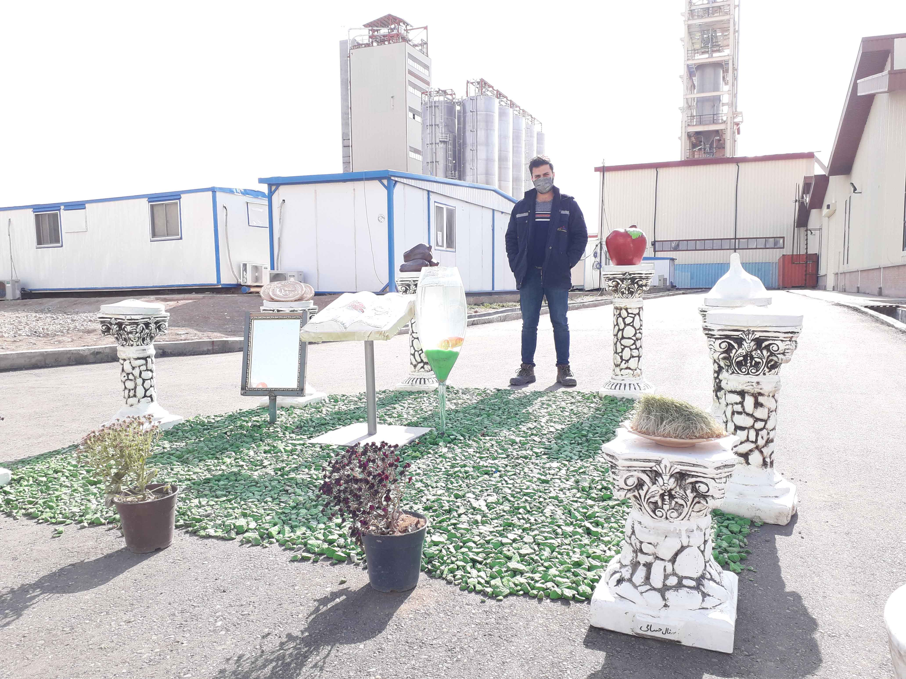
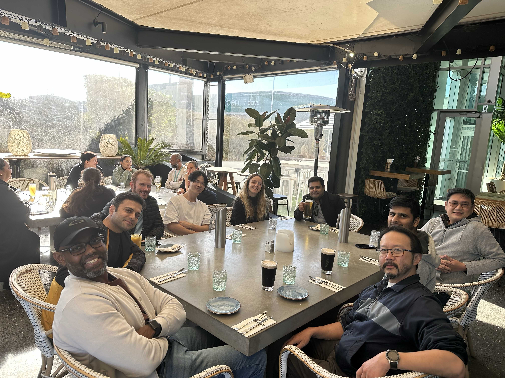
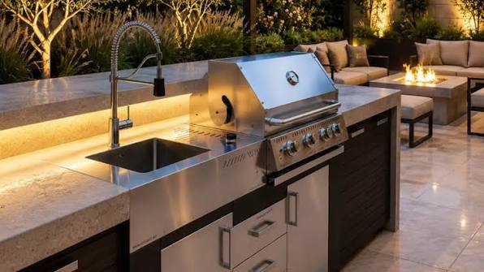
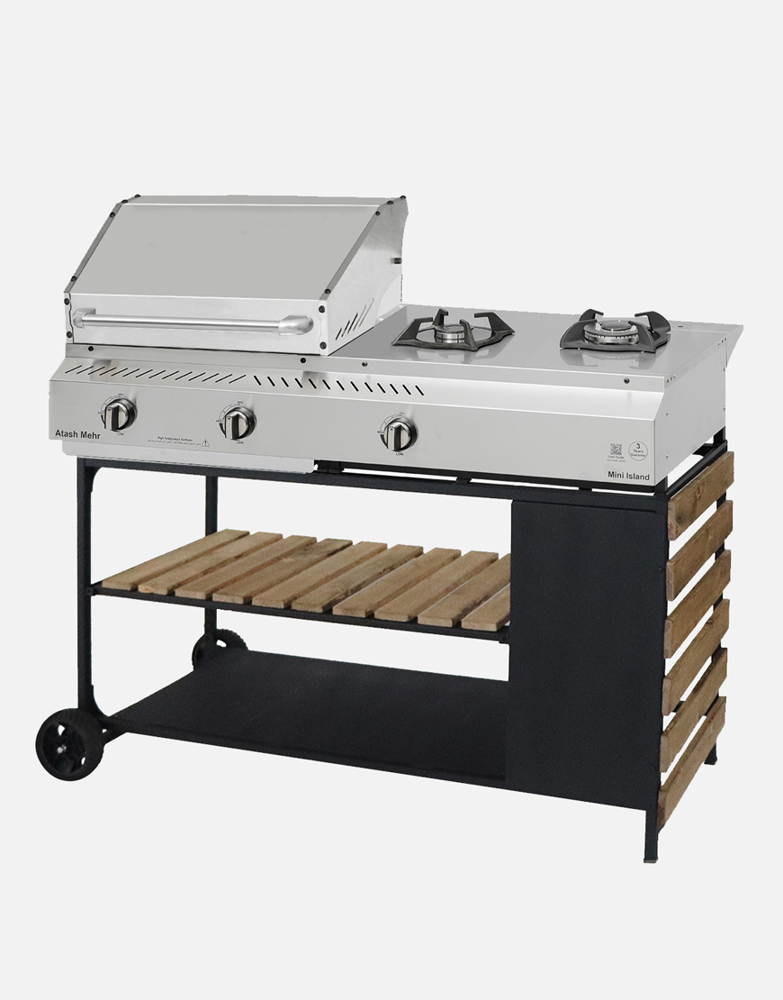
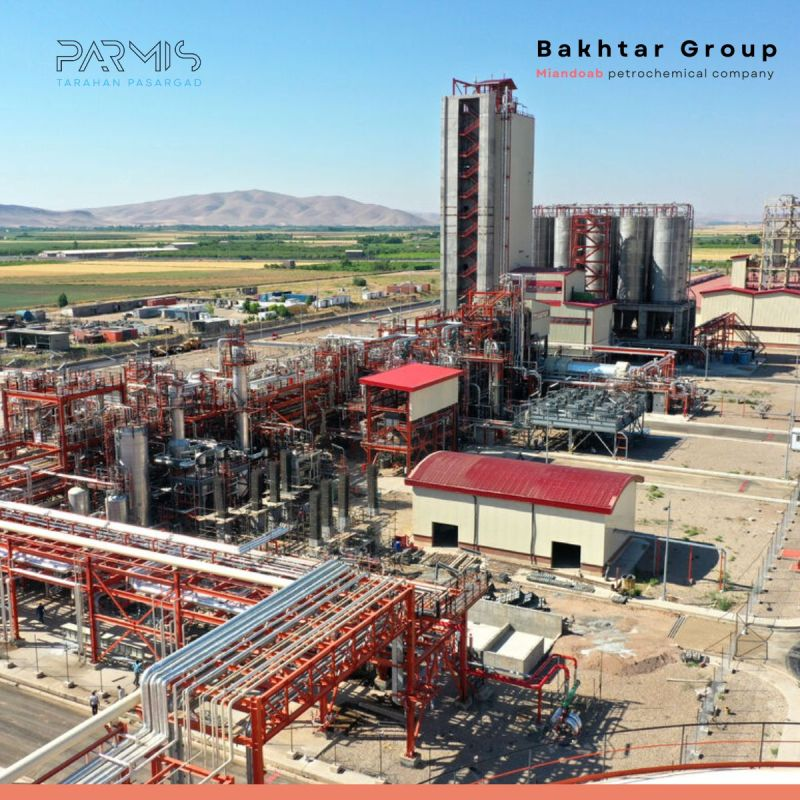

My Experience




Operations Engineer
Aroa Biosurgery
Responsibilities: I joined Aroa as an Operations Engineer after I finished my PhD. With a team of four engineers, I was responsible for the smooth operation of the company's manufacturing processes and production equipment.
Our role involved identifying and resolving operational issues through troubleshooting and root cause analysis, developing action plans to address problems, and, when necessary, modifying equipment designs using SolidWorks to improve manufacturing procedures, efficiency, and operator experience.
Working within an ISO 13485-compliant quality management system, we ensured that all procedures followed established quality requirements. Any changes, improvements, or updates to equipment and processes had to be properly documented, reviewed, and approved through the company's Quality Management System (QMS).
I designed and assembled the parts in SolidWorks. The prototypes were evaluated, and improvements were made until they were approved. The next step was to generate technical drawings to order the parts from approved suppliers. Finally, I assembled the received parts. This was an interesting part of my job, as I could assemble the parts I had designed, see how they fitted together, and understand how they worked in practice.
Mechanical Engineer
AtashMehr
Responsibilities: At AtashMehr, I worked as a Mechanical Engineer in the Product Development team, where we primarily manufactured barbecues and cooktops. Our products ranged from standalone barbecues to customised outdoor kitchen units, known as barbecue islands. These islands were tailored to customers' available space and requirements, with optional features such as side cooktops, refrigerators, sinks, and side tables.
I designed the company's first cooktop and managed its product development from initial design and component ordering through to testing and preparation for standards certification.
I prepared detailed technical drawings for in-house manufacturing and final assembly, working closely with the manufacturing team to ensure designs were practical to produce and assemble. This collaboration involved defining appropriate tolerances and specifications, addressing manufacturing challenges, and ensuring consistent product quality.
As most components were made from sheet metal, I specified bend lines, bending order, angles, and other critical parameters in technical drawings to support fabrication and assembly.These drawings helped the production team for accurate sheet cut, bend, and assembly.

A customised AtashMehr island barbecue

An AtashMehr barbecue
Mechanical Engineer
Bakhtar Petrochemical Company
Responsibilities: I started my career by joining Bakhtar Petrochemical Company, a large complex producing plastic granules. It was a relatively large place to learn about many aspects of engineering, from processing raw materials and producing side products such as pure oxygen, nitrogen, and hydrogen to producing compounds in a controlled environment inside a tank. Being able to see various types of pumps, compressors, large chillers, cooling towers, extruders, and automatic bagging machines was a very valuable experience for me. I worked during the initial construction of the complex, which helped me gain a deeper understanding of the installation and operation processes.
Then, I worked mainly in the bagging section, where high-capacity automatic bagging machines were used to fill and seal the bags, place them on pallets, and cover them with shrink wrap for transportation.
This experience helped me understand how all these components can work together to produce a valuable product.

Bakhtar Petrochemical Company